免疫反应本来在做什么？
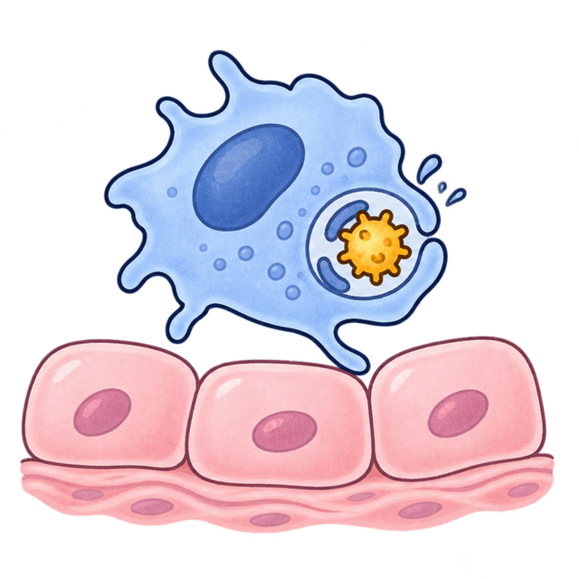
上滑，看看哪里出了问题
抗原已经清除了，为什么组织也受伤了？
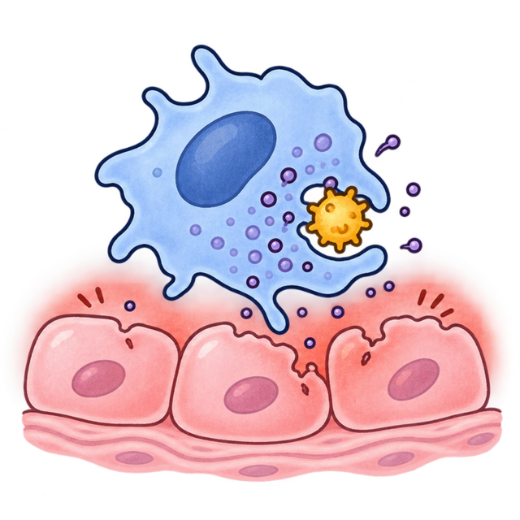
当免疫反应造成自身组织损伤时，就称为超敏反应。
损伤方式不同，因此分为Ⅰ、Ⅱ、Ⅲ、Ⅳ型。
上滑，从Ⅰ型开始
青霉素过敏性休克
反应为什么会这么快？
先看一个事实第一次接触青霉素后，B细胞会产生针对它的免疫球蛋白E。
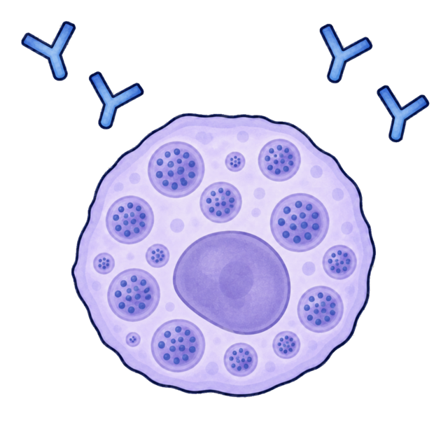
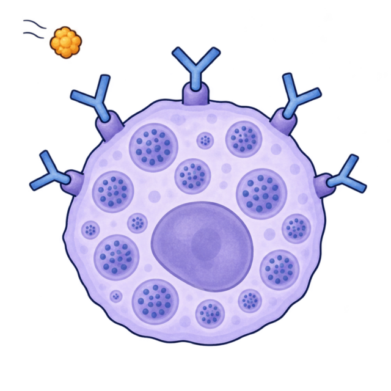
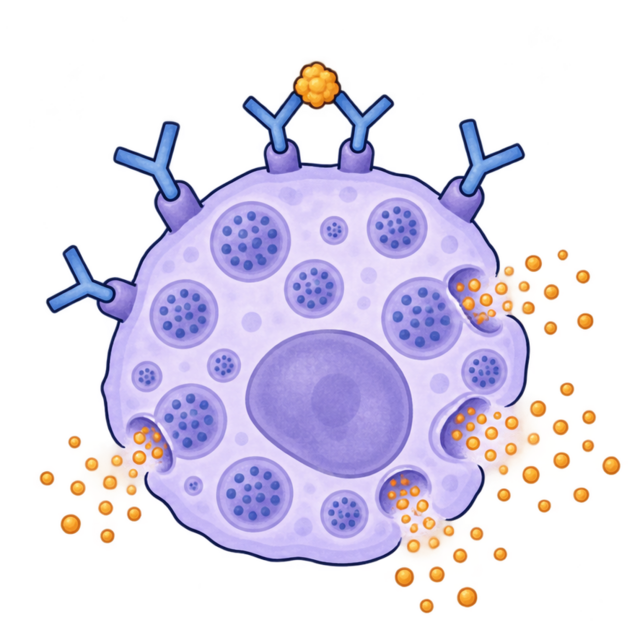
初次接触后：免疫球蛋白E已经产生 免疫球蛋白E结合在肥大细胞表面 再次接触后：介质迅速释放1 / 2
这些免疫球蛋白E会在哪里提前做好准备？
2 / 2
同一种青霉素再次进入后，肥大细胞会怎样？
免疫球蛋白E已经让肥大细胞处于致敏状态；同一抗原再次进入时，预先储存的介质可以迅速释放。
Ⅰ型青霉素过敏性休克、支气管哮喘、荨麻疹
记忆先致敏，再迅速释放 → Ⅰ型
上滑学习Ⅱ型
血型不合输血反应
红细胞为什么会被损伤？
先看一个事实输错血后，进入体内的红细胞表面带着与受血者不相容的抗原。
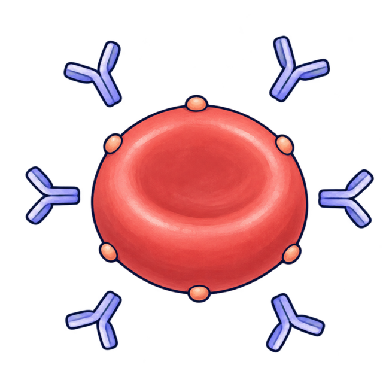
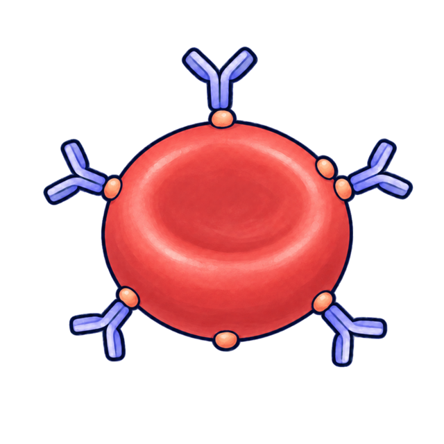
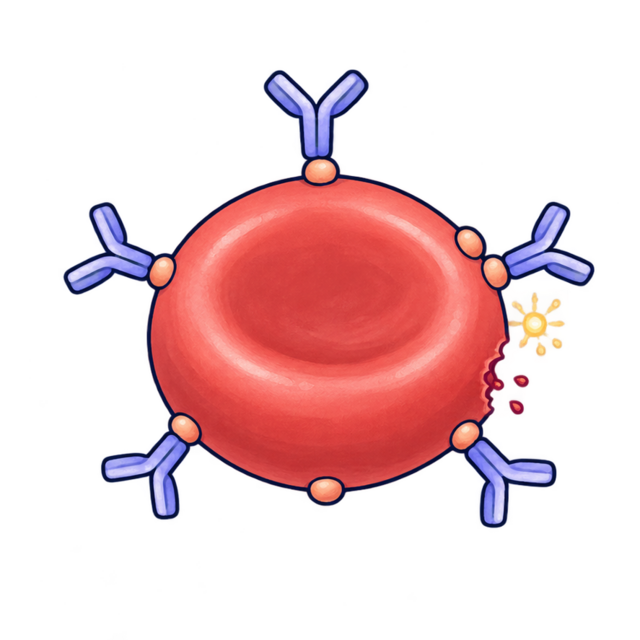
抗体正在寻找靶点 抗体贴在红细胞表面 补体等参与，红细胞受损输错血后，进入体内的红细胞表面带有与受血者不相容的抗原。
1 / 2
这些抗体会先和哪里结合？
抗体已经贴住红细胞表面的固定抗原。
2 / 2
抗体贴住红细胞以后，接下来会怎样？
免疫球蛋白G或M直接结合红细胞表面的抗原，并在补体等参与下造成细胞损伤。
Ⅱ型血型不合输血反应、系统性红斑狼疮的血细胞损伤、急性血管型排斥反应、肺出血－肾炎综合征、超急性排斥反应
记忆抗体贴住固定靶点，细胞受损 → Ⅱ型
上滑学习Ⅲ型
免疫复合物性肾小球肾炎
复合物为什么会损伤肾小球？
先看一个事实某些抗原进入血液后，会遇到针对它们的抗体。
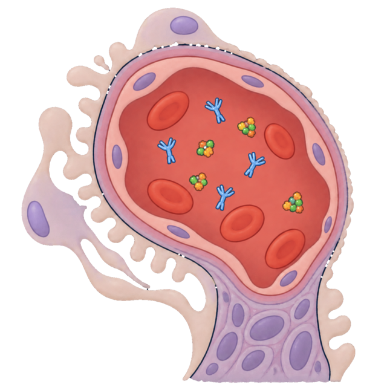
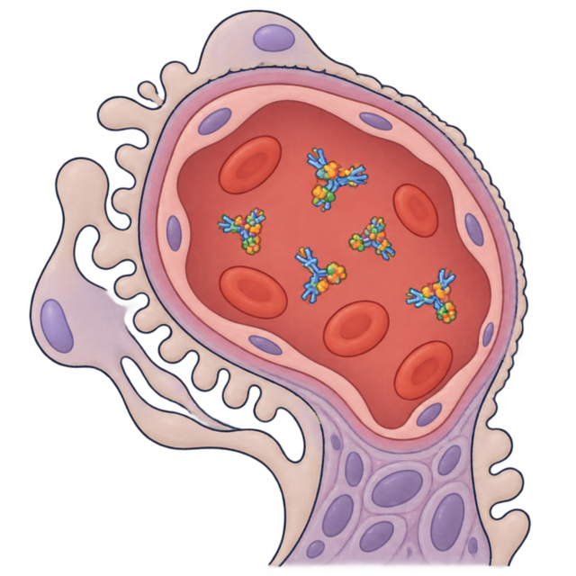
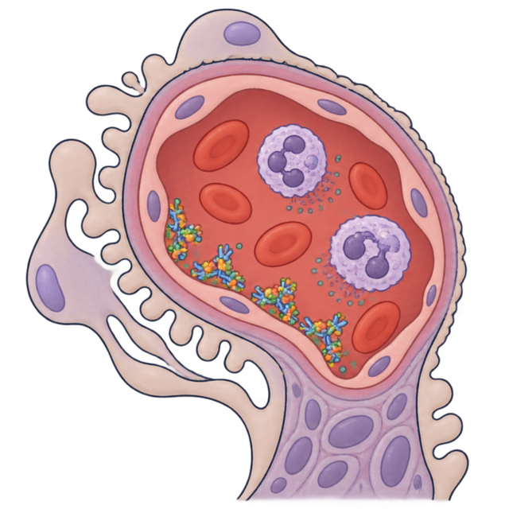
抗原与抗体还未结合 免疫复合物在血中形成 复合物沉积并引起炎症1 / 2
抗原与抗体在血液中相遇后，会先形成什么？
2 / 2
这些复合物到达肾小球后，哪一步会造成局部损伤？
免疫复合物沉积后激活补体、募集白细胞，引起血管和组织损伤。
Ⅲ型系统性红斑狼疮的内脏损伤、类风湿关节炎、免疫复合物性肾小球肾炎
记忆复合物形成后沉积 → Ⅲ型
上滑学习Ⅳ型
结核菌素试验
为什么要过一段时间才出现反应？
先看一个事实结核菌素进入皮肤后，局部出现了需要处理的抗原。
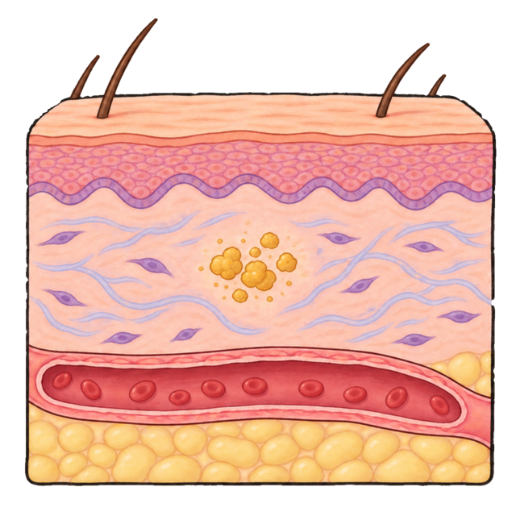
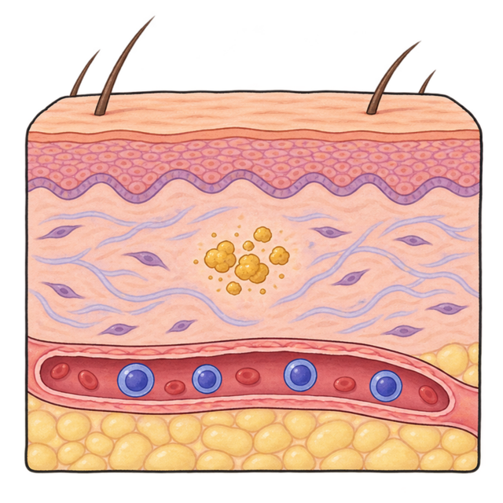
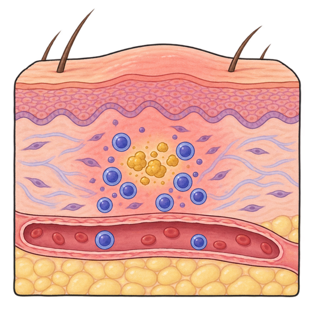
局部出现抗原 效应T细胞在血液中 效应T细胞进入局部1 / 2
这类反应主要等谁到达局部？
2 / 2
为什么反应通常要过一段时间才出现？
效应T细胞进入局部并引起炎症需要一定时间，通常于再次接触抗原后24～72小时出现。
Ⅳ型结核病、结核菌素试验、血吸虫虫卵结节、急性细胞型排斥反应
记忆效应T细胞进入局部 → Ⅳ型
上滑辨析易混疾病
易混辨析
同样是系统性红斑狼疮，为什么分型不同？
哪种损伤属于Ⅲ型超敏反应？
血细胞损伤抗体贴住血细胞Ⅱ型
内脏损伤免疫复合物沉积Ⅲ型
记忆损伤血细胞看Ⅱ型；损伤内脏看Ⅲ型
上滑辨析排斥反应
易混辨析
排斥反应，关键看谁在攻击
哪种排斥反应主要由T细胞介导，属于Ⅳ型？
超急性、急性血管型抗体介导Ⅱ型
急性细胞型T细胞介导Ⅳ型
记忆“细胞型”抓住T细胞和Ⅳ型
完成 · 四种机制已经串成疾病分类线索